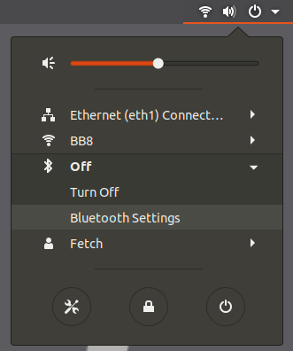
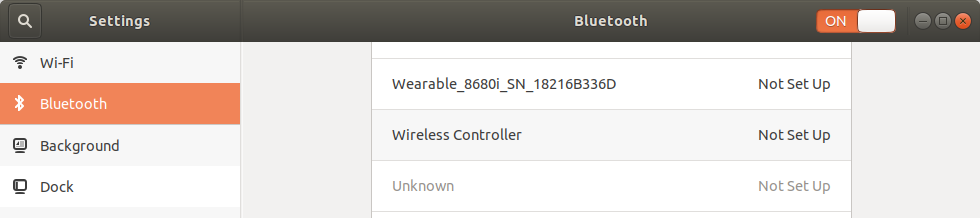
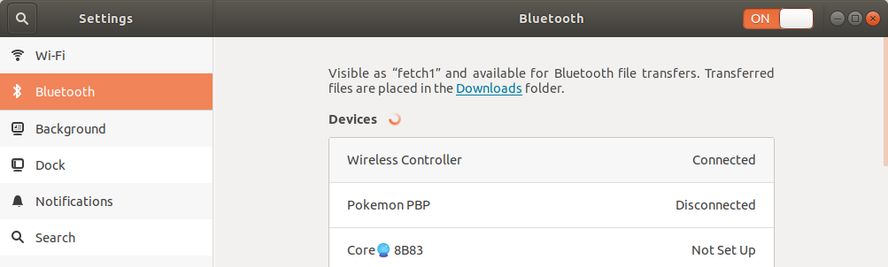

Switching your robot to using a PS4 controller¶
This procedure guides you in updating your robot to be controlled with a PS4 controller.
If you are just trying to re-pair you PS4 controller, you can skip to the Restart Bluetooth and Pair PS4 Controller section, and also skip the sections that follow it.
Who is this guide intended for?:
Customers who received a PS3 controller with their robot, and would like to instead use a PS4 controller with their robot.
What requirements are there for using a PS4 controller?:
Your robot needs to be running Ubuntu 20.04 + ROS Noetic (or Ubuntu 18.04 + ROS Melodic)
You will need a PS4 controller (also called DualShock 4 Wireless Controller for PlayStation 4).
Warning
Third party controllers may not work. Only Sony PS4 controllers have been tested.
Upgrade your Fetch robot’s packages¶
Run the following to upgrade packages that are relevant:
sudo apt update
sudo apt install --only-upgrade ros-noetic-*
export ROBOTTYPE=$(hostname | awk -F'[0-9]' '{print $1}')
wget http://packages.fetchrobotics.com/binaries/$ROBOTTYPE-noetic-config.deb
sudo apt install ./$ROBOTTYPE-noetic-config.deb -y
Disable the PS3’s ps3joy driver/service¶
The following commands will disable the ps3joy systemd service:
sudo service ps3joy stop
sudo systemctl disable ps3joy
Restart Bluetooth and Pair PS4 Controller¶
Since ps3joy disables the default Bluetooth service, the following is needed to start it again:
sudo service bluetooth restart
Next, a monitor needs to be hooked up to the robot, in order to go through the Bluetooth pairing process.
To pair with the controller, open the wifi menu in the top right, expand the Bluetooth section, and click the Bluetooth settings, indicated below:

To put the controller in pairing mode, press and hold the Share button, and then press and hold the center PS4 button for a second and then release it, and then release the share button. The LED on the controller should start flashing twice, once per second.
If the LED is flashing once per second, you may need to retry the above after turning off the controller. You can turn off the controller by holding the center button for 10s.
Once the controller is in pairing mode, it should show up in the list of devices, like below. You may have to scroll to the bottom of the list.
{kind=link}

Once you click the Wireless Controller entry, it should show up as connected at the top of the list.
{kind=link}

When the controller is connected, its LED will be solid blue.
Next, disconnect the controller. To disconnect the controller, you can hold the central button for 10 seconds. To re-connect the controller, just pressing the center button is required. Sometimes it may take a couple tries.
Enable the ds4drv driver/service for the PS4 controller¶
Next we enable the new service (created by the updated install of fetch-noetic-config):
sudo systemctl daemon-reload && sudo systemctl enable ps4joy && sudo service ps4joy start
This is a custom service that launches ds4drv.
Set the robot to use the PS4 controller¶
To enable the PS4 controller inputs to move the robot, a param needs to be set in /etc/ros/noetic/robot.launch.
If your robot is using a robot.launch file that you restored after installing ROS Noetic, you may need to make the following modification to your robot.launch file to add the ps4 param:
- <include file="$(find freight_bringup)/launch/include/teleop.launch.xml" />
+ <include file="$(find freight_bringup)/launch/include/teleop.launch.xml">
+ <arg name="ps4" value="true" />
+ </include>
Additionally, if you previously modified robot.launch to add the following arg, you should remove this arg:
<arg name="joy_device" value="/dev/input/js0" /> # Remove this line if it exists!
By default, with the latest update, the above parameter is not needed. It now defaults to /dev/fetch_joy, which will get created by UDEV rules for both PS3 and PS4 controllers.
Finally, with the arm safely resting so that it won’t fall, restart roscore.:
sudo service roscore restart
The controller should now move the robot.
Troubleshooting¶
If you run into issues, check the following when the controller is connected:
Does
jstest /dev/ps4joyreflect movement of the PS4 controller when it is connected?What nodes are listed when you do
rosnode list | grep joy? We expect, joy_node and joy_remap.Is the topic
/joypublishing? (rostopic hz /joy)
Reverting back to using PS3 controller¶
While not recommended, in case you encounter issues and need to switch back, the below outlines the steps to revert the procedures above:
Change the ps4 arg value to false in /etc/ros/noetic/robot.launch
sudo service ps4joy stop && sudo systemctl disable ps4joysudo systemctl enable ps3joy && sudo service ps3joy startWith the arm safely resting so that it does not fall,
sudo service roscore restartConnect your PS3 controller.